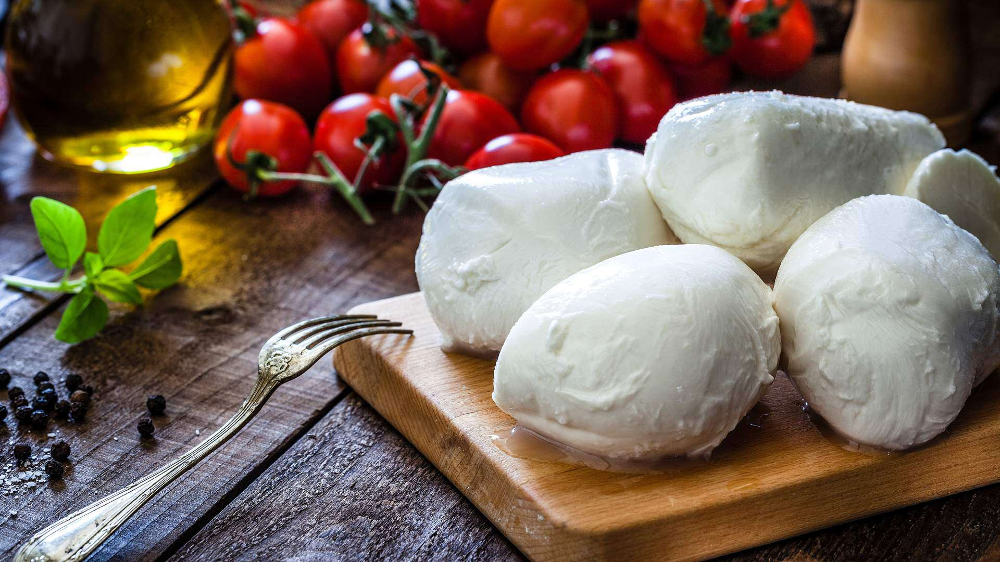
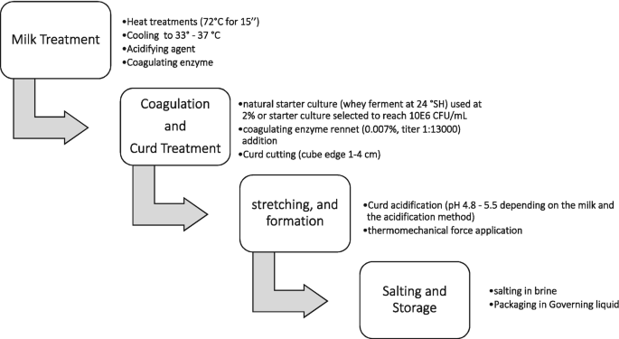

⏲ 30minutes
Mozarella is a soft fresh cheese made from bufallo milk. It originates from Italy where it's eaten on pizza, salads and many more dishes. The bufallo milk can be substituted with normal cows milk. The taste of mozarella is mild and creamy. The texture is soft and squeaky.
Milk has a proteïn called caseïne. When you add citric acid it lowers the pH of the milk. It will make sure your mozarella gets the right texture. The calcium phosphate in the casein micelles dissolve and replaced by hydrogen. This increases the stretch. Rennet destroys the caseïn micelles so they bind together, forming cheese curds. These cheesecurds are kneaded and stretched at high temperature forming the mozarella balls.

1. Dissolve the citric acid in 215ml water.
2. Dissolve the rennet in 60 ml water.
3. Add the milk into a big pot, while stirring add the citric
acid solution.
4. Put heat on medium high, while stirring occacionaly until the
milk is 32 Celcius and take the pan off the heat.
5. Add the rennet mixture while stirring the milk for 25 seconds
and add a lid. Wait for 5 minutes.
6. Curds start to form, cut the curds into squares with a
knife.
7. Put the pot back onto the heat until it reaches 40 Celsius
while stirring very slowly to not break up the curds. Remove it from the
heat and let it sit for 5 minutes.
8. Take the curds out of the pan and put it into a strainer and
gently squirt out the whey from the curds with your hands.
9. The whey (liquid that's left) is seasoned with salt and put
back on to the stove until it reaches 80 Celsius.
10. Place the curd into the whey and let it sit until it's
malleable. Fold and stretch the cheese and make balls from it.
11. If you want to store them, store them in the cooled whey
solution up to 4 days in the fridge.